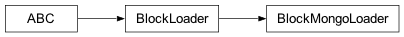

qdatac.mongo
Classes
Helper class that provides a standard way to create an ABC using |
|
Helper class that provides a standard way to create an ABC using |
Module Contents
- class qdatac.mongo.MongoLoader(url: str)
Bases:
qdatac.loader.LoaderHelper class that provides a standard way to create an ABC using inheritance.
- loader
- async load_bond_info(*, filter: Dict | None = {}, sort: Dict | None = {}, limit: int | None = None, to_frame=True) List[Dict] | pandas.DataFrame
- async load_bond_daily(*, filter: Dict | None = {}, sort: Dict | None = {}, limit: int | None = None, to_frame=True) List[Dict] | pandas.DataFrame
- async load_fund_info(*, filter: Dict | None = {}, sort: Dict | None = {}, limit: int | None = None, to_frame=True) List[Dict] | pandas.DataFrame
- async load_fund_daily(*, filter: Dict | None = {}, sort: Dict | None = {}, limit: int | None = None, to_frame=True) List[Dict] | pandas.DataFrame
- async load_fund_net(*, filter: Dict | None = {}, sort: Dict | None = {}, limit: int | None = None, to_frame=True) List[Dict] | pandas.DataFrame
- async load_index_info(*, filter: Dict | None = {}, sort: Dict | None = {}, limit: int | None = None, to_frame=True) List[Dict] | pandas.DataFrame
- async load_index_daily(*, filter: Dict | None = {}, sort: Dict | None = {}, limit: int | None = None, to_frame=True) List[Dict] | pandas.DataFrame
- async load_stock_info(*, filter: Dict | None = {}, sort: Dict | None = {}, limit: int | None = None, to_frame=True) List[Dict] | pandas.DataFrame
- async load_stock_daily(*, filter: Dict | None = {}, sort: Dict | None = {}, limit: int | None = None, to_frame=True) List[Dict] | pandas.DataFrame
- async load_stock_index(*, filter: Dict | None = {}, sort: Dict | None = {}, limit: int | None = None, to_frame=True) List[Dict] | pandas.DataFrame
- async load_stock_industry(*, filter: Dict | None = {}, sort: Dict | None = {}, limit: int | None = None, to_frame=True) List[Dict] | pandas.DataFrame
- async load_stock_industry_daily(*, filter: Dict | None = {}, sort: Dict | None = {}, limit: int | None = None, to_frame=True) List[Dict] | pandas.DataFrame
- async load_stock_industry_detail(*, filter: Dict | None = {}, sort: Dict | None = {}, limit: int | None = None, to_frame=True) List[Dict] | pandas.DataFrame
- async load_stock_concept(*, filter: Dict | None = {}, sort: Dict | None = {}, limit: int | None = None, to_frame=True) List[Dict] | pandas.DataFrame
- async load_stock_concept_daily(*, filter: Dict | None = {}, sort: Dict | None = {}, limit: int | None = None, to_frame=True) List[Dict] | pandas.DataFrame
- async load_stock_concept_detail(*, filter: Dict | None = {}, sort: Dict | None = {}, limit: int | None = None, to_frame=True) List[Dict] | pandas.DataFrame
- async load_stock_yjbb(*, filter: Dict | None = {}, sort: Dict | None = {}, limit: int | None = None, to_frame=True) List[Dict] | pandas.DataFrame
- async load_stock_margin(*, filter: Dict | None = {}, sort: Dict | None = {}, limit: int | None = None, to_frame=True) List[Dict] | pandas.DataFrame
- async count(*, tab: str) int
- async load_info(*, typ: str, filter: Dict | None = {}, sort: Dict | None = {}, limit: int | None = None, to_frame=True) List[Dict] | pandas.DataFrame
- async load_daily(*, typ: str, filter: Dict | None = {}, sort: Dict | None = {}, limit: int | None = None, to_frame=True) List[Dict] | pandas.DataFrame
- class qdatac.mongo.BlockMongoLoader(url: str)
Bases:
qdatac.loader.BlockLoaderHelper class that provides a standard way to create an ABC using inheritance.
- loader
- static to_dataframe(to_frame, data)
- load_bond_info(*, filter: Dict | None = {}, sort: Dict | None = {}, limit: int | None = None, to_frame=True) List[Dict] | pandas.DataFrame
- load_bond_daily(*, filter: Dict | None = {}, sort: Dict | None = {}, limit: int | None = None, to_frame=True) List[Dict] | pandas.DataFrame
- load_fund_info(*, filter: Dict | None = {}, sort: Dict | None = {}, limit: int | None = None, to_frame=True) List[Dict] | pandas.DataFrame
- load_fund_daily(*, filter: Dict | None = {}, sort: Dict | None = {}, limit: int | None = None, to_frame=True) List[Dict] | pandas.DataFrame
- load_fund_net(*, filter: Dict | None = {}, sort: Dict | None = {}, limit: int | None = None, to_frame=True) List[Dict] | pandas.DataFrame
- load_index_info(*, filter: Dict | None = {}, sort: Dict | None = {}, limit: int | None = None, to_frame=True) List[Dict] | pandas.DataFrame
- load_index_daily(*, filter: Dict | None = {}, sort: Dict | None = {}, limit: int | None = None, to_frame=True) List[Dict] | pandas.DataFrame
- load_stock_info(*, filter: Dict | None = {}, sort: Dict | None = {}, limit: int | None = None, to_frame=True) List[Dict] | pandas.DataFrame
- load_stock_daily(*, filter: Dict | None = {}, sort: Dict | None = {}, limit: int | None = None, to_frame=True) List[Dict] | pandas.DataFrame
- load_stock_index(*, filter: Dict | None = {}, sort: Dict | None = {}, limit: int | None = None, to_frame=True) List[Dict] | pandas.DataFrame
- load_stock_industry(*, filter: Dict | None = {}, sort: Dict | None = {}, limit: int | None = None, to_frame=True) List[Dict] | pandas.DataFrame
- load_stock_industry_daily(*, filter: Dict | None = {}, sort: Dict | None = {}, limit: int | None = None, to_frame=True) List[Dict] | pandas.DataFrame
- load_stock_industry_detail(*, filter: Dict | None = {}, sort: Dict | None = {}, limit: int | None = None, to_frame=True) List[Dict] | pandas.DataFrame
- load_stock_concept(*, filter: Dict | None = {}, sort: Dict | None = {}, limit: int | None = None, to_frame=True) List[Dict] | pandas.DataFrame
- load_stock_concept_daily(*, filter: Dict | None = {}, sort: Dict | None = {}, limit: int | None = None, to_frame=True) List[Dict] | pandas.DataFrame
- load_stock_concept_detail(*, filter: Dict | None = {}, sort: Dict | None = {}, limit: int | None = None, to_frame=True) List[Dict] | pandas.DataFrame
- load_stock_yjbb(*, filter: Dict | None = {}, sort: Dict | None = {}, limit: int | None = None, to_frame=True) List[Dict] | pandas.DataFrame
- load_stock_margin(*, filter: Dict | None = {}, sort: Dict | None = {}, limit: int | None = None, to_frame=True) List[Dict] | pandas.DataFrame
- count(*, tab: str) int
- load_info(*, typ: str, filter: Dict | None = {}, sort: Dict | None = {}, limit: int | None = None, to_frame=True) List[Dict] | pandas.DataFrame
- load_daily(*, typ: str, filter: Dict | None = {}, sort: Dict | None = {}, limit: int | None = None, to_frame=True) List[Dict] | pandas.DataFrame